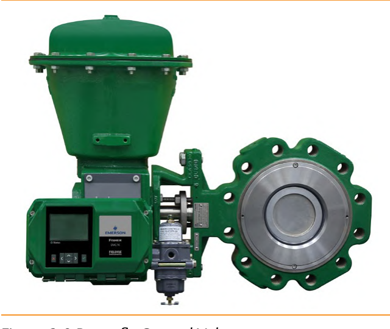
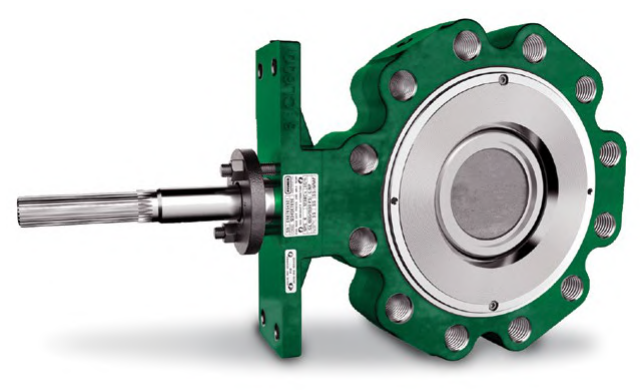

Butterfly Valve Types
Standard (offset-shaft)

Shaft offset from the disc center (Fig. 3.7) swings the disc clear of the seat as it opens — less seat wear than a centered shaft
High-performance (double-offset)

A second, radial offset pulls the disc away from the seal after it begins to open — a tighter, longer-wearing seal at higher pressure
After Control Valve Handbook, 6th ed., Figs. 3.9, 3.11 — used directly; shaft-offset geometry after Fig. 3.7. Component Index: cvh-cmp-butterfly-shaft-offset-disc-center, cvh-cmp-butterfly-control-valve, cvh-cmp-high-performance-butterfly-valve.